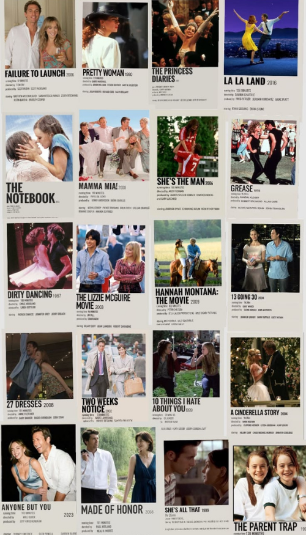

About My Love for Rom-Coms
Romantic comedies are one of my favorite movie genres. Whether it's a classic from the early 2000s or a newer release, I love a movie that combines romance, humor, and a happy ending. This page lists some of my favorite rom-coms and recommendations for anyone looking for their next movie to watch.

My Top 5 Rom-Coms of All Time
It's hard to choose just five, but these are my all-time favorite rom-coms that I could watch over and over again.
- How to Lose a Guy in 10 Days
- 10 Things I Hate About You
- When Harry Met Sally
- 13 Going on 30
- Notting Hill
2000s Classics
The 2000s were an iconic time for romantic comedies. These are a few more of my favorites from the era that I think every rom-com fan should watch.
- Sweet Home Alabama
- He's Just Not That Into You
- Love Actually
- 50 First Dates
- Two Weeks Notice
Modern Favorites
Rom-coms are still going strong today. These are some of my favorite modern movies that bring a fresh take to the genre.
- Crazy Rich Asians
- Palm Springs
- Anyone But You
- People We Meet on Vacation
- Ticket to Paradise
My #1 Pick: How to Lose a Guy in 10 Days
If I had to recommend just one rom-com, it would be How to Lose a Guy in 10 Days. It has everything I love about the genre: humor, chemistry, an iconic storyline, and plenty of memorable moments. It's one of those movies I can watch over and over again and never get tired of.
Learn more about How to Lose a Guy in 10 Days on IMDb